In der WinLine sollen die wichtigsten Informationen und Menüpunkte des aktuellen Objekts schnell und einfach ab- bzw. aufrufbar sein. Dieses wird durch objektbezogene Kontextmenüs realisiert; die sogenannten DrillDowns.
ü WinLine Fenster
Wird eine
Information unterstrichen angezeigt (z.B. ), so bedeutet dieses, dass ein DrillDown
vorhanden ist (der Mauscursor wird zusätzlich als Hand dargestellt).
ü WinLine Tabelle
Wird eine
Information in blauer Schrift und unterstrichen angezeigt (z.B. ), so bedeutet dieses, dass ein DrillDown
vorhanden ist (der Mauscursor wird zusätzlich als Hand dargestellt).
ü Druckvorschau
Wird eine
Information in blauer Schrift und unterstrichen angezeigt (z.B. ), so bedeutet dieses, dass durch Anklicken
dieser Information weitere Daten hervorgeholt werden können (der Mauscursor wird
zusätzlich als Hand dargestellt).
Ob ein DrillDown dabei mit der linken oder rechten Maustaste angewählt wird, hat folgende Auswirkung:
ü Linke Maustaste
Die zuletzt
gewählte Aktion / Funktion wird ausgeführt.
ü Rechte Maustaste
Abhängig vom
Objekt stehen diverse Funktionen zur Verfügung; z.B. kann bei einem
Personenkonto in die Stammdaten gewechselt oder die Statistik ausgegeben werden.
Bei Belegen stehen wiederum andere Möglichkeiten zur Verfügung. Grundsätzlich
speichert sich die WinLine die zuletzt gewählte Funktion pro Objekt ab und
stellt diese automatisch per linker Maustaste zur Verfügung. Die Funktion wird
dabei mit einer Umrandung / Hinterlegung (z.B. ) oder einem Haken () versehen.
Für die folgenden Objekte stehen objektbezogene DrillDowns zur Verfügung, wobei immer die Berechtigungen des Benutzers bei DrillDown-Ausführung berücksichtigt werden:
Sachkonto
Wenn es sich um ein Sachkonto handelt, dann können folgende Funktionen angesprochen werden:
ü Aufruf Info (WinLine INFO)
ü Sachkontenstamm (WinLine FAKT oder WinLine FIBU)
ü Kontoblatt-Tabelle (WinLine FIBU)
Personenkonto
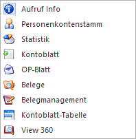
Wenn es sich um ein Personenkonto handelt, dann können folgende Funktionen angesprochen werden:
ü Aufruf Info (WinLine INFO)
ü Personenkontenstamm (WinLine FAKT oder WinLine FIBU)
ü Statistik (WinLine FAKT)
ü Kontenblatt (WinLine FIBU)
ü OP-Blatt (WinLine FIBU)
ü Belege (WinLine FAKT)
ü Belegmanagement (WinLine FAKT)
ü Kontoblatt-Tabelle (WinLine FIBU)
ü View 360 (aktuelle Applikation)
Artikel
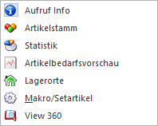
Wenn es sich um einen Artikel handelt, dann können folgende Funktionen angesprochen werden:
ü Aufruf Info (WinLine INFO)
ü Artikelstamm (WinLine FAKT)
ü Statistik (WinLine FAKT)
ü Artikelbedarfsvorschau (WinLine FAKT)
ü Lagerorte (WinLine FAKT)
ü Makro/Setartikel (WinLine FAKT)
ü View 360 (aktuelle Applikation)
Belege
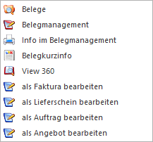
Handelt es sich um einen Beleg, so werden die folgenden Funktionen immer angeboten:
ü Belege (WinLine FAKT)
ü Belegmanagement (WinLine FAKT)
ü Info / Info im Belegmanagement (WinLine FAKT)
ü Belegkurzinfo (aktuelle Applikation)
ü View 360 (aktuelle Applikation)
Die weiteren Aktionen mit der Bezeichnung "als xxx bearbeiten" (WinLine FAKT) werden in Abhängigkeit zum aktuellen Beleg gebildet. So wird z.B. bei einem Lieferschein die Bearbeitung als Angebot bzw. Auftrag nicht angeboten.
Hinweis
Der erste Eintrag innerhalb des Kontextmenüs kann in den Belegoptionen (WinLine FAKT - Stammdaten - Belegstammdaten - Belegoptionen) benutzerspezifisch definiert werden (Register "DrillDown / Fokus" - Option "erster Eintrag"). Zusätzlich kann dort hinterlegt werden, ob die Info direkt oder über das Belegmanagement erfolgen soll.
Produktionsauftrag
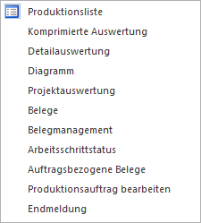
Wenn es sich um einen Produktionsauftrag handelt, dann können folgende Funktionen angesprochen werden:
ü Produktionsliste (WinLine PPS)
ü Komprimierte Auswertung (WinLine PPS)
ü Detailauswertung (WinLine PPS)
ü Diagramm (WinLine PPS)
ü Projektauswertung (WinLine PPS)
ü Belege (WinLine FAKT)
ü Belegmanagement (WinLine FAKT)
ü Arbeitsschrittstatus (WinLine PPS)
ü Auftragsbezogene Belege (WinLine FAKT)
ü Produktionsauftrag bearbeiten (WinLine PPS)
ü Endmeldung (WinLine PPS)
Projekt
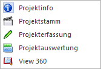
Handelt es sich um ein Projekt, so stehen die folgenden Funktionen zur Verfügung:
ü Projektinfo (WinLine INFO)
ü Projektestamm (WinLine FAKT)
ü Projekt Erfassung (WinLine FAKT)
ü Projektauswertung (WinLine FAKT)
ü View 360 (aktuelle Applikation)
Arbeitnehmer
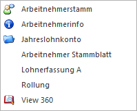
Handelt es sich um einen Arbeitnehmer (WinLine LOHN A), so können folgende Funktionen angesprochen werden:
ü Arbeitnehmerstamm (WinLine LOHN)
ü Arbeitnehmerinfo (WinLine INFO)
ü Jahreslohnkonto (WinLine LOHN)
ü Arbeitnehmer Stammblatt (WinLine LOHN)
ü Lohnerfassung A (WinLine LOHN)
ü Rollung (WinLine LOHN)
ü View 360 (aktuelle Applikation)
Kontakte & Ansprechpartner
Wenn es sich um einen Kontakt oder Ansprechpartner handelt, dann kann folgende Funktion angesprochen werden:
ü Kontakte & Ansprechpartner (aktuelle Applikation)
ü View 360 (aktuelle Applikation)
Interessenten
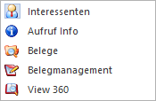
Wenn sich um einen Interessenten handelt, dann können folgende Funktionen angesprochen werden:
ü Interessenten (WinLine FAKT)
ü Aufruf Info (WinLine INFO)
ü Belege (WinLine FAKT)
ü Belegmanagement (WinLine FAKT)
ü View 360 (aktuelle Applikation)
CRM
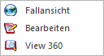
Wenn es sich um einen CRM-Fall handelt, so werden folgende Funktionen angeboten:
ü Fallansicht (aktuelle Applikation)
ü Bearbeiten (aktuelle Applikation)
ü View 360 (aktuelle Applikation)
Mitarbeiter
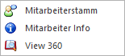
Handelt es sich um einen Mitarbeiter, so stehen die folgenden Funktionen zur Verfügung:
ü Mitarbeiterstamm (WinLine INFO)
ü Mitarbeiter Info (WinLine INFO)
ü View 360 (aktuelle Applikation)
Vertreter
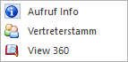
Handelt es sich um einen Vertreter, so stehen die folgenden Funktionen zur Verfügung:
ü Aufruf Info (WinLine INFO)
ü Vertreterstamm (WinLine FAKT)
ü View 360 (aktuelle Applikation)
Kunden-/Lieferantengruppe
Wenn das Objekt "Kunden-/Lieferantengruppe" hinterlegt ist, können folgende Funktionen angesprochen werden:
ü Kunden-/Lieferantengruppe (WinLine FAKT)
ü Mehrjahresvergleich (WinLine INFO)
Artikelgruppe
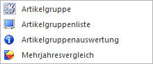
Wenn das Objekt "Artikelgruppe" hinterlegt ist, können folgende Funktionen angesprochen werden:
ü Artikelgruppe (WinLine FAKT)
ü Artikelgruppenliste (WinLine FAKT)
ü Artikelgruppenauswertung (WinLine FAKT)
ü Mehrjahresvergleich (WinLine INFO)
Artikeluntergruppe
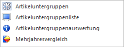
Wenn das Objekt "Artikeluntergruppe" hinterlegt ist, können folgende Funktionen angesprochen werden:
ü Artikeluntergruppen (WinLine FAKT)
ü Artikeluntergruppenliste (WinLine FAKT)
ü Artikeluntergruppenauswertung (WinLine FAKT)
ü Mehrjahresvergleich (WinLine INFO)
Kostenstelle
Wenn das Objekt "Kostenstelle" hinterlegt ist, können folgende Funktionen angesprochen werden:
ü Kostenstelle (WinLine KORE)
ü Mehrjahresvergleich (WinLine INFO)
Kostenträger
Wenn das Objekt "Kostenträger" hinterlegt ist, können folgende Funktionen angesprochen werden:
ü Kostenträger (WinLine KORE)
ü Mehrjahresvergleich (WinLine INFO)
Kostenart
Wenn das Objekt "Kostenart" hinterlegt ist, können folgende Funktionen angesprochen werden:
ü Kostenart (WinLine KORE)
ü Mehrjahresvergleich (WinLine INFO)